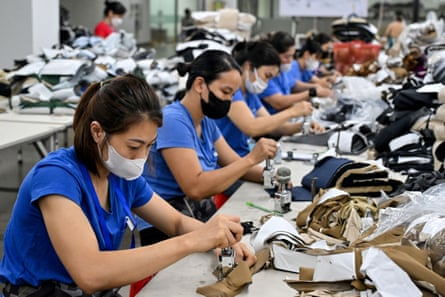
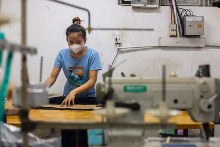

As news spread that Vietnam would become just the second nation to reach an initial tariff agreement with Washington, shares in the clothing companies and manufacturers that have a large footprint in the country rose with optimism.
Just hours later though, they declined sharply, as it became clear that the devil would be in the detail, and the most striking part of the deal might in fact be aimed at Vietnam’s powerful neighbour China.
Dodging the severe levy of 46% that was threatened in April, Vietnam is instead facing a tariff of 20% for many goods , and in return US products coming into the country will have zero tariffs placed on them.
However, a 40% tariff will remain for so-called transshipments – a provision that is aimed at Chinese companies accused of passing their products through Vietnam, or elsewhere, to avoid US tariffs.
Businesses worry that “transshipment” is a politicised term, and that if the US defines it too broadly, many goods could be unfairly targeted.
“Vietnam is a manufacturing hub – and as a hub you take inputs from other countries and make value-added stuff in Vietnam, and then export it to other countries,” says Dr Nguyen Khac Giang, visiting fellow at the ISEAS Yusof Ishak Institute.
It is unrealistic, he adds, to expect most Vietnamese goods, other than agricultural products, would be made entirely in Vietnam. What remains to be decided is: what proportion of a product should be?
How transshipments will be defined under the agreement – and how this policy will be enforced – remains to be seen, but it could have significant implications for global trade and tensions with China.
Workers at a garment factory in Vietnam’s Thai Nguyen province.Photograph: Nhac Nguyen/AFP/Getty Images
“One lesson for other countries is that the US intends to use these deals to apply pressure on China,” said Stephen Olson, a former US trade negotiator.
Vietnam, a booming manufacturing hub, benefited during the last Trump administration when punishing tariffs placed on China prompted many Chinese companies to shift their supply chains.
However, this caused the Vietnamese trade surplus with the US to surge, attracting US ire and allegations that Vietnam was wrongly acting as a conduit for Chinese companies wanting access to the US market.
China’s commerce ministry spokesperson He Yongqian responded to the US-Vietnam deal on Thursday stating: “We firmly oppose any party reaching a deal at the expense of China’s interests. If such a situation occurs, China will resolutely counter it to safeguard its legitimate rights and interests.”
Vietnam’s manufacturing industry is closely intertwined with both the US and China. US exports account for 30% of Vietnam’s GDP, while China is Vietnam’s top import source, relied on for raw materials used to make anything from footwear to furniture and electronics.
Vietnam is not alone in relying on China for such components, especially across electronic sectors. “[China] is completely interwoven into global supply chains,” says Dan Martin, international business adviser at Dezan Shira and Associates, based in Hanoi.
If companies are expected to prove the origin of all goods, this could place an unwelcome burden on those in sectors such as textiles where margins are low, says Martin.
However, he cautions that it remains to be seen whether the higher 40% tariff on transshipments will be actively enforced. It is also possible that Vietnam could benefit if US policy encourages suppliers to set up shop in Vietnam, Martin adds.
Workers at a garment factory in Ho Chi Minh, Vietnam.Photograph: Anadolu/Getty Images
Businesses are largely pausing decisions until a clearer picture emerges, say analysts.
Policymakers in Hanoi remain on a diplomatic tightrope. Vietnam has long sought to balance relations with Washington and Beijing. It considers the US not only a key export market but a security partner that serves as a counterbalance to China’s assertiveness.
However, if Beijing considers that Hanoi is helping Washington constrain it, this risks antagonising Vietnam’s northern neighbour. It could lead to economic measures from China, or pressure over the disputed South China Sea, a major flashpoint in the region, says Peter Mumford, head of practice for south-east Asia at Eurasia Group.
As things stand, “aggressive retaliation” by Beijing against Hanoi is unlikely, he says: “Hanoi may even have given Beijing a rough indication of the steps it would have to take to secure a US trade deal.”
Vietnam has made efforts to show goodwill towards China over recent months, while also courting Trump.
In exchange for the 20% tariff rate, Trump said Vietnam would open up its market to US goods. US-made SUVs, “which do so well in the United States, will be a wonderful addition to the various product lines within Vietnam”, said Trump.
However the market for cars remains small in Vietnam, where city streets are famously crammed with millions of motorbikes.